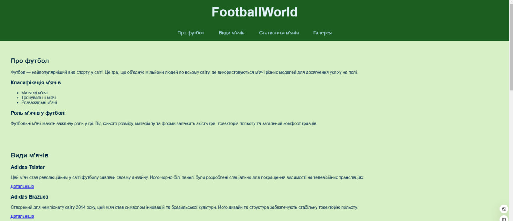

Звіти лабораторних робіт
З дисципліни "Інтернет-технології та проєктування WEB-застосувань"
Студента групи ІС-31 Сичова Артема
|
Лабораторна Робота №1 |
Лабораторна Робота №2 |
Лабораторна Робота №3 |
Лабораторна Робота №4 |
Лабораторна Робота №5 |
Лабораторна Робота №6 |
Лабораторна Робота №7 |
Лабораторна Робота №8 |
Лабораторна Робота №9 |
|
Опис предметного середовища |
ТемаСайт FootballWorld, присвячений м'ячам, їх різноманітності, ролі у спорті, цікавим фактам, фотогалереям та статистичним даним. МетаНадати комплексний огляд м'чів, підвищити обізнаність про їх важливість у чемпіонатах, зацікавити користувачів через цікаві факти та візуальний контент, а також служити ресурсом для глибшого вивчення цих речей. Що ви знайдете на FootballWorld:
FootballWorld — це ваш віртуальний гід у світі м'ячів, що дозволяє вам пізнавати і захоплюватись цими чудовими речами, які використовуються в одному з найпопулярніших видів спорту. Скріншот макету головної сторінки |
|
Тема. Мета. Місце розташування ЛР №1 |
|
| Структура документа | |
| HTML-код таблиці | |
| HTML-код форми | |
| HTML-код списку | |
| HTML-код зображення | |
| Висновки |